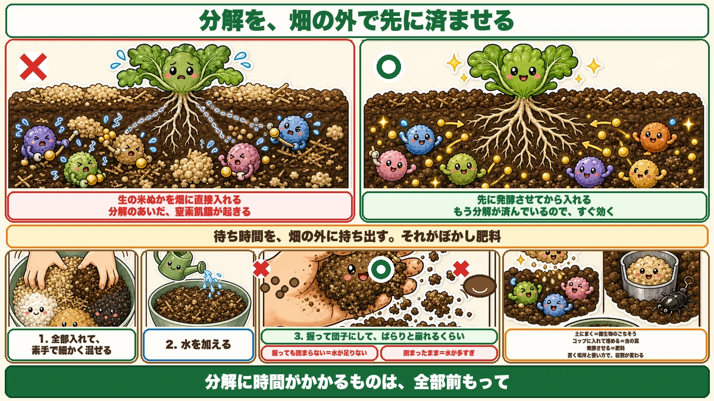
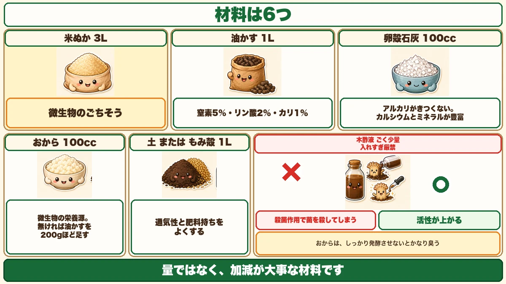
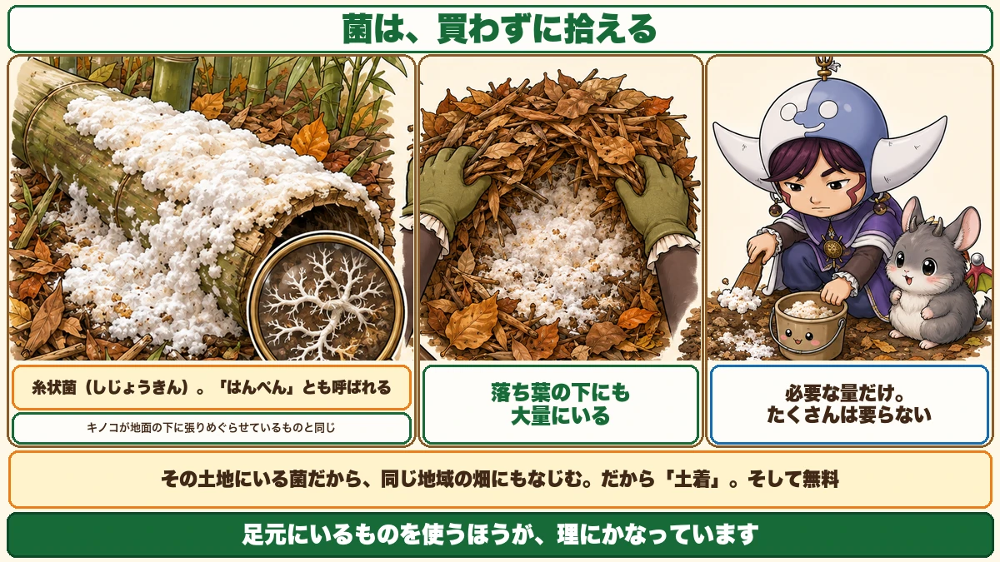

肥料の主役は、竹やぶで拾えます🍂 白い菌を探してください

🍂「肥料って、買うものだと思っていた」
🍂「ぼかし肥料って、何がぼかしなの？」
🍂「米ぬかをまいたら、逆に育ちが悪くなった」
どうも、8150（えいこう）です🌱 家庭菜園歴8年、理科の教員免許を持っていて、有機・無農薬で野菜を育てています。
秋は、落ち葉が手に入る季節です。★冬に向けて、肥料を仕込む時期でもあります。
先に、この記事でいちばん言いたいことを言っておきます。
★ぼかし肥料の主役は、竹やぶで拾えます。
★菌は、買わなくていいんです☺️
★★なぜ「発酵させる」のか
前に、こういう話をしました
寒起こしの記事で、米ぬかの話をしました。覚えていらっしゃるでしょうか。
★米ぬかは、分解のときに窒素を使います。
これを★窒素飢餓と言います。★分解している最中は、土の中の窒素が微生物に取られてしまう。
だから★冬のうちに入れて、春までに分解を終わらせる、とお伝えしました。
★★ぼかし肥料は、それを畑の外でやります
ここが、今日いちばん大事な考え方です。
★ぼかし肥料とは、その分解を「畑の外で先に済ませてしまう」やり方です。

- ★畑に直接入れる → ★分解のあいだ、窒素飢餓が起きる
- ★★先に発酵させてから入れる → ★もう分解が済んでいるので、すぐ効く
★待ち時間を、畑の外に持ち出す。それがぼかし肥料の意味です。
「ぼかし」という名前
なぜ「ぼかし」と呼ぶのか。
★肥料の効き目を、ぼかす（やわらげる）から、という説があります。
生の材料をそのまま入れると、効きすぎたり、ガスが出たりします。★発酵させることで、角が取れる。
★急に効くものを、ゆっくり効くものに変える作業だと思ってください。
材料
6つあります
実際の配合を紹介します。

★米ぬか … 3L
★主材料です。★微生物のごちそうになります。
★油かす … 1L
★窒素5%・リン酸2%・カリ1%。★窒素分を足す役です。
★卵殻石灰 … 100cc
★これがいいところです。★アルカリ性がきつくないので、入れすぎの失敗が起きにくい。★カルシウムとミネラルが豊富です。
前にじゃがいもの記事で「★ほうれん草の跡地はアルカリに傾いていて、そうか病が出やすい」とお伝えしました。★卵殻石灰はきつくないので、じゃがいもにも使えます。
★おから … 100cc
★微生物の栄養源です。★無ければ、油かすを200gほど足せば大丈夫です。
★ただし、しっかり発酵させないと、かなり臭います。★頑張って発酵させてください。
★土、またはもみ殻 … 1L
★通気性と肥料持ちをよくします。
★木酢液 … ごく少量
★★入れすぎは厳禁です。
★木酢液には殺菌作用があります。たくさん入れると、★せっかくの菌を殺してしまいます。
★ほんの少しだけ入れると、逆に微生物活動の刺激になって、活性が上がります。
★量ではなく、加減が大事な材料です。
★★主役は「土着菌」
菌は、買いません
さて、ここからが今日の本題です。
★ぼかし肥料は、発酵させて作ります。ということは、★発酵させる菌が要ります。
市販の菌を買うこともできます。★でも、拾えます。

★★竹やぶを見てください
どこにいるのか。
★竹やぶです。
★去年切って、転がしておいた竹。それが腐ってくると、そこに★白いものがびっしり張り付いています。
★これが土着菌です。
★糸状菌（しじょうきん）とも言います
正体を説明します。
★白く、糸のように広がる菌です。★糸状菌と呼ばれます。
見た目から★「はんぺん」と呼ぶ人もいます。★白くて、ふわっとした、まさにはんぺんのような塊です。
★キノコの仲間だと思ってください。キノコが地面の下に張りめぐらせているものと、同じものです。
★★落ち葉の下にも、います
竹やぶがない方もいらっしゃいますよね。★大丈夫です。
★落ち葉の下にも、大量にいます。
公園でも、雑木林でも、家の裏でも。★去年の落ち葉が積もっているところをかき分けてみてください。
★白いものが見えたら、それです。
★こそぎ落として、持ち帰る
採り方は簡単です。
★竹についた菌を、こそぎ落とすだけ。
★必要な量だけ集めて持ち帰ります。★たくさんは要りません。
★★「土着」という言葉の意味
なぜ買わずに拾うのか。
★その土地にいる菌だからです。
★もともとその環境で生きてきた菌なので、★同じ地域の畑にもなじみます。
★買った菌が悪いわけではありません。でも★足元にいるものを使うほうが、理にかなっています。
★そして、無料です。
作り方
混ぜるだけです
材料と菌がそろったら、あとは簡単です。
★1. 全部の材料を投入する
★2. ★素手で、よくかき混ぜる
★3. ★細かく、細かく混ぜ合わせる
★ここが肝心です。★混ざりが甘いと、発酵にムラが出ます。
★量が多くなければ、手でやるのがいちばん確実です。
★木酢液は、最後にほんの少し
混ざったら、★木酢液をほんの少しだけ加えます。
★繰り返しますが、入れすぎないでください。
水を加える
そして、水を加えます。
面白い工夫を知りました。
★きのこ栽培キットの古い培地を、1日水に浸けておく。★その水を使う。
★菌がたくさんいそうな水です。効果があるかは分かりませんが、★試してみる価値はあると思いました。
★普通の水でも構いません。
★★硬さの目安は「握って、ばらり」
いちばん大事なのが、水の量です。目安があります。
★ぎゅっと握って団子にして、★ばらりと崩れるくらい。
- ★握っても固まらない → 水が足りない
- ★握ったら固まったまま → 水が多すぎ
★団子にはなるけれど、指で押すとばらける。★その状態が正解です。
これは★堆肥づくりでも、よく使われる目安です。
★★米ぬかは、みんなのごちそうでした
3回目の登場です
このブログで、米ぬかは3回出てきました。
★1回目：寒起こし
★米ぬかは、土の中の微生物のごちそう。★掘り返した塊の上にまいておく。
★2回目：ヨトウムシ
★ヨトウムシは、米ぬかが大好物。★紙コップに入れて株元に埋めると、トラップになる。
★3回目：今日
★ぼかし肥料の主材料。★微生物のごちそうになって、発酵が進む。
★★同じものが、役割を変えます
面白いと思うのは、ここです。
★微生物にも、虫にも、同じようにごちそうです。
そして★置く場所と使い方で、味方にも、罠にも、肥料にもなります。
- ★土にまけば … 微生物が働いて、土がよくなる
- ★コップに入れて埋めれば … 虫を集める罠になる
- ★★発酵させれば … 肥料になる
★道具そのものより、使い方が大事。★家庭菜園には、こういう場面が多いと思います。
秋に仕込む理由
★材料が、いちばん集まる季節です
なぜ秋なのか。
★落ち葉が手に入るからです。
★土着菌を採るのも、落ち葉の下がいちばん確実です。
そして★冬のあいだに発酵が進みます。★春の植え付けに間に合います。
前にお話しした流れと、つながります
秋から冬の作業を並べてみると、こうなります。
- ★10月 … ぼかし肥料を仕込む
- ★12月〜2月 … 寒起こしをして、米ぬかをまく
- ★2月 … うねを作って、肥料を入れる
- ★3月 … 苗づくりを始める
★分解に時間がかかるものは、全部前もって。★これが冬の畑仕事の考え方です。
この記事の要点
まとめ
- ★★ぼかし肥料とは、分解を「畑の外で先に済ませてしまう」やり方
- ★畑に直接入れると、分解のあいだ窒素飢餓が起きる
- ★先に発酵させれば、もう分解が済んでいるのですぐ効く
- ★「ぼかし」は、効き目をやわらげるという意味
- 材料6つ＝★米ぬか3L／油かす1L／卵殻石灰100cc／おから100cc／土かもみ殻1L／木酢液ごく少量
- ★卵殻石灰はアルカリがきつくないので、入れすぎの失敗が起きにくい
- ★おからが無ければ、油かすを200gほど足す。★発酵が甘いとかなり臭う
- ★★木酢液は入れすぎ厳禁。★殺菌作用で菌を殺してしまう。★ほんの少しなら活性が上がる
- ★★主役は土着菌。★買わずに拾える
- ★腐った竹に、白い菌がびっしり張り付いている
- ★糸状菌とも、はんぺんとも呼ばれる。★キノコの仲間
- ★★落ち葉の下にも大量にいる
- ★こそぎ落として、必要な量だけ持ち帰る
- ★その土地の菌なので、同じ地域の畑になじむ。★そして無料
- 作り方＝★全部入れて、素手で、細かく混ぜる
- ★★硬さは「握って団子にして、ばらりと崩れる」くらい
- ★握っても固まらない＝水不足／固まったまま＝水が多すぎ
- ★★米ぬかは、微生物のごちそうであり、虫のごちそうであり、肥料の主材料
- ★置く場所と使い方で、味方にも罠にも肥料にもなる
- ★秋に仕込むのは、落ち葉と土着菌がいちばん集まる季節だから
- ★冬のあいだに発酵が進み、春の植え付けに間に合う
- ★分解に時間がかかるものは、全部前もって
全部やろうとしなくて大丈夫です。まずは近所の落ち葉が積もったところを、少しかき分けてみてください。★白いものが見えたら、それが肥料の主役です🍂
次回は、秋にまく豆の話。★大きく育てると冬に枯れる、という話をします
ここまで読んでくださって、ありがとうございました。
米ぬか
微生物のごちそうです。ぼかし肥料の主材料になります。
![[商品価格に関しましては、リンクが作成された時点と現時点で情報が変更されている場合がございます。]](https://hbb.afl.rakuten.co.jp/hgb/565b770c.0e767ab7.565b770f.2286fabc/?me_id=1245791&item_id=10001139&pc=https%3A%2F%2Fthumbnail.image.rakuten.co.jp%2F%400_mall%2Figamai-tominaga%2Fcabinet%2Fkome%2Fimgrc0133415879.jpg%3F_ex%3D240x240&s=240x240&t=picttext "[商品価格に関しましては、リンクが作成された時点と現時点で情報が変更されている場合がございます。]")

発酵油かす
窒素の供給源。米ぬかと合わせて発酵させます。
![[商品価格に関しましては、リンクが作成された時点と現時点で情報が変更されている場合がございます。]](https://hbb.afl.rakuten.co.jp/hgb/55e75fe5.20db4cd1.55e75fe7.d1ec32cc/?me_id=1194164&item_id=10000908&pc=https%3A%2F%2Fthumbnail.image.rakuten.co.jp%2F%400_mall%2Fgardening%2Fcabinet%2Fhiryousennyouhiryo%2Fomakase-1.jpg%3F_ex%3D240x240&s=240x240&t=picttext "[商品価格に関しましては、リンクが作成された時点と現時点で情報が変更されている場合がございます。]")
貝殻石灰
アルカリがきつくなく、カルシウムとミネラルを補えます。
![[商品価格に関しましては、リンクが作成された時点と現時点で情報が変更されている場合がございます。]](https://hbb.afl.rakuten.co.jp/hgb/56d21b6a.c19127f6.56d21b6b.c5473e84/?me_id=1258048&item_id=10000067&pc=https%3A%2F%2Fthumbnail.image.rakuten.co.jp%2F%400_mall%2Fkaneashop%2Fcabinet%2F12084383%2F12419790%2Fimgrc0108924525.jpg%3F_ex%3D240x240&s=240x240&t=picttext "[商品価格に関しましては、リンクが作成された時点と現時点で情報が変更されている場合がございます。]")
くん炭（もみ殻）
通気性と肥料もちをよくします。仕上がりが扱いやすくなります。
![[商品価格に関しましては、リンクが作成された時点と現時点で情報が変更されている場合がございます。]](https://hbb.afl.rakuten.co.jp/hgb/56bc30bc.01c5b89d.56bc30bd.ee310357/?me_id=1231595&item_id=10000412&pc=https%3A%2F%2Fthumbnail.image.rakuten.co.jp%2F%400_mall%2Fplanto-iwa%2Fcabinet%2F2707.jpg%3F_ex%3D240x240&s=240x240&t=picttext "[商品価格に関しましては、リンクが作成された時点と現時点で情報が変更されている場合がございます。]")
あわせて読みたい